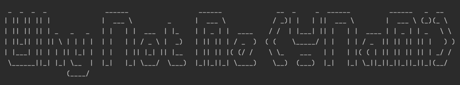
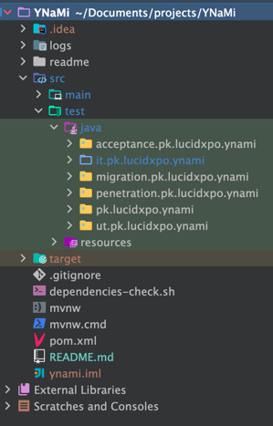

Why Not Me!!! (YNaMi)
Purpose of this awsomazing project is to have such a template which implements the best software development practices, and structures the software code in a manner that we can just use this template and start adding out classes in those locations.
Testing
Talking about best practices and fear free software development, see how the test package looks like below:

It'll setup the following testing strategies:
- Unit tests using JUnit 5
- Integration tests
- Database migration tests
- Acceptance tests using cucumber and Selenium
- Penetration tests using Zed Attack Proxy (ZAP)
Running tests from IDE
I guess, since Java 17, we need to add the following to VM options in order to use reflection.
Changes has already been accordingly in the pom.xml file, but don't forget to add the following to VM options if running this application from IDE:
--add-opens java.base/java.lang=ALL-UNNAMED --add-opens java.base/java.lang.reflect=ALL-UNNAMED
But since the spring boot upgrade, seems like we don't need to set them in the VM options nor in the
spring-boot-maven-plugin in pom.xml file.
And add the following to run the integration tests from the IDE:
--add-opens java.base/java.util=ALL-UNNAMED
--add-opens java.base/java.text=ALL-UNNAMED
--add-opens java.base/java.lang=ALL-UNNAMED
--add-opens java.base/java.lang.reflect=ALL-UNNAMED
--add-opens java.desktop/java.awt.font=ALL-UNNAMED
Maven spring-boot:run profiles
- There are some profiles setup which can be used to choose datasource while starting up spring-boot app.
- To see the list of configured profiles, run
mvn help:all-profiles-
Configured profiles (in pom.xml file) are:
Profile ID Profile Description h2mvn spring-boot:run -Ph2will start the sprin boot application withH2datasourcemysqlmvn spring-boot:run -Pmysqlwill start the sprin boot application withMySqldatasource
-
An alternate approach to this is to use the following command:
mvn spring-boot:run -Dspring-boot.run.arguments="--ynami.spring.datasource.profile=mysql"
In order to achieve that, spring-boot-maven-plugin plugin should be configured as below:
<plugin>
<groupId>org.springframework.boot</groupId>
<artifactId>spring-boot-maven-plugin</artifactId>
<configuration>
<jvmArguments>${spring.datasource.type.jvmArguments}</jvmArguments>
</configuration>
</plugin>
And the value for spring.datasource.type.jvmArguments with be either of the following:
-Dynami.spring.datasource.profile=h2
-Dynami.spring.datasource.profile=mysql
Learn more about [Maven Profiles][maven-profiles-url]
Maven test profiles
- There are some profiles setup which can be used switch on/off certain things.
- To see the list of configured profiles, run
mvn help:all-profiles-
Configured profiles (in pom.xml file) are:
Profile ID Profile Description utIt'll run only the unit tests itIt'll run only the integration tests uitIt'll run both the unit and the integration tests ntIt'll run no tests at all (skipping execution of all tests).
-
In order to run the integration tests with particular datasource, combine the it profile with either h2
or mysql profile as below:
mvn clean integration-test -P it,h2 --file pom.xml
OR
mvn clean integration-test -P it,mysql --file pom.xml
Learn more about [Maven Profiles][maven-profiles-url]
Running Single Test
Single test can be run like that but without specifying the testing profiles mentioned above. h2
or mysql profile can be mentioned but if testing profile is mentioned, then it'll run that profile too.
mvn test -Dtest="Sample*Test"
mvn test -Dtest=SampleControllerTest
mvn test -Dtest="SampleControllerTest"
mvn test -Dtest="SampleControllerTest,SampleFeatureControllerTest"
mvn test -Dtest="SampleControllerTest#shouldGetAllSamples"
mvn test -Dtest="SampleControllerTest#shouldGetAllSamples+shouldGetSampleById"
And integration tests:
mvn test -Dtest=SampleControllerIntegrationTest
mvn test -Dtest=SampleControllerIntegrationTest -Dynami.spring.datasource.profile=h2
mvn test -Dtest=SampleControllerIntegrationTest -Dynami.spring.datasource.profile=mysql
mvn test -Dtest=SampleControllerIntegrationTest -Ph2 # Doesn't work as it runs all the tests (ut, it, mt, at, bt...)
mvn test -Dtest="SampleServiceIntegrationTest#shouldVerifyTheRetrievalOfElementById" -Dynami.spring.datasource.profile=h2
Or
mvn integration-test -Dtest="SampleControllerIntegrationTest"
mvn integration-test -Dtest="SampleControllerIntegrationTest" -Dynami.spring.datasource.profile=h2
mvn integration-test -Dtest="SampleControllerIntegrationTest" -Dynami.spring.datasource.profile=mysql
mvn integration-test -Dtest="SampleControllerIntegrationTest" -Ph2 # Doesn't work as it runs all the tests (ut, it, mt, at, bt...)
mvn integration-test -Dtest="SampleControllerIntegrationTest#shouldGetAllSamples"
NOTE:
PowerShell interprets - as PowerShell params, to run the mvn commands with -D, preprend them with --%,
or pass them in double quotes. Examples:
mvn test "-Dtest=SampleControllerIntegrationTest" "-Dynami.spring.datasource.profile=h2"
# OR
mvn test --% -Dtest=SampleControllerIntegrationTest -Dynami.spring.datasource.profile=h2
mvn test –% -Dtest=AuditEntryRepositoryIntegrationTest -Dynami.spring.datasource.profile=h2 mvn test –% -Dtest=StaticResourcesAccessSecurityConfigIntegrationTest -Dynami.spring.datasource.profile=h2
mvn test –% -Dtest=RedirectionSecurityIntegrationTest -Dynami.spring.datasource.profile=h2 mvn test –% -Dtest=ApplicationEndpointsSecurityIntegrationTest -Dynami.spring.datasource.profile=h2
Another NOTE:
If you encounter any of the following while running mvn commands, try them
with -Daether.connector.https.securityMode=insecure, e.g:
mvn -Daether.connector.https.securityMode=insecure clean compile
And the sample errors:
[ERROR] [ERROR] Some problems were encountered while processing the POMs:
[FATAL] Non-resolvable parent POM for pk.lucidxpo:ynami:0.0.1-SNAPSHOT: The following artifacts could not be
resolved: org.springframework.boot:spring-boot-starter-parent:pom:3.4.4 (absent): Could not transfer artifact
org.springframework.boot:spring-boot-starter-parent:pom:3.4.4 from/to telflow-release
(https://nexus.support.telflow.com/content/repositories/telflow-release): Connect to nexus.support.telflow.com:443
[nexus.support.telflow.com/3.1.21.206, nexus.support.telflow.com/13.250.213.155] failed: connect timed out
and 'parent.relativePath' points at no local POM @ line 20, column 10
OR
[ERROR] [ERROR] Some problems were encountered while processing the POMs:
[FATAL] Non-resolvable parent POM for pk.lucidxpo:ynami:0.0.1-SNAPSHOT: The following artifacts could not be
resolved: org.springframework.boot:spring-boot-starter-parent:pom:3.4.4 (absent): Could not transfer
artifact org.springframework.boot:spring-boot-starter-parent:pom:3.4.4 from/to maven-repo2
(https://repo1.maven.org/maven2/): PKIX path building failed: sun.security.provider.certpath.SunCertPathBuilderException:
unable to find valid certification path to requested target and 'parent.relativePath' points at no local POM @ line 20, column 10
Check for updates
Run the following command to get a list of dependencies (which have newer versions available). along with the current and the new version:
mvn versions:display-dependency-updates
Setting up H2
Setting up Data Sources in IntelliJ
Docker Setup (MySQL etc.)
Flyway - Database Migrations
Issues faced during the JAVA upgrade
Issues faced during the SpringBoot upgrade
Checksums for SQL files
Checksums are used in order to ensure that the SQL db migration scripts are not changed. It's to encourage to write a new migration script if any more change/update is required instead of touching the existing migration scripts.
To generate checksum for the newly add SQL db migration script, just run the DBMigrationScriptsChecksumTest test.
The test will fail printing on the console something like below:
*****************************************************************************************
New DB migration/s has/ve been added. The following line/s MUST be added to checksums.txt
V004__create_auditentry_and_auditentryarchive_tables.sql,370a9d48d1ba9fcd47515b6d223727a0
*****************************************************************************************
You MUST add the new checksum/s value/s to the checksums.txt file
*****************************************************************************************
Copy the file name along with the checksum from that output and add it to the end of the checksums.txt file.